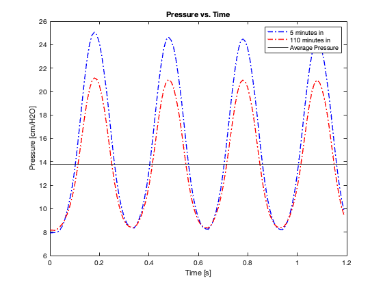

clear all
close all
clc
the_file_name = "M4-10_snapdat.xlsx";
T = get_data(the_file_name);
inputs = ["P V", "T P", "T V"];
proper_input = false;
data_inputs = zeros(1, 2);
while proper_input == false
disp("Enter the type of graph you wish to plot.")
disp("The options are Volume vs Pressure, Pressure vs Time, Volume vs Time.")
user_input = 'T P';
disp("please select 2 different numbers 1 - 8 inclusive")
data_inputs = [1, 8];
for n = 1:length(inputs)
if user_input == inputs(n) && 1 <= data_inputs(1) && data_inputs(1) <= 8 && 1 <= data_inputs(2) && data_inputs(2) <= 8
proper_input = true;
break
end
end
if proper_input == true && (data_inputs(1) ~= data_inputs(2))
disp("loading plot please wait...")
else
clc
disp("Improper input please reread the instructions and try again.", 'r')
proper_input = false;
end
end
for n = 1:2
times(n) = (((data_inputs(n) - 1) * 15) + 5);
end
if user_input == "P V"
graph_lines = get_graph_lines(user_input, data_inputs);
plot(T.(graph_lines(1)), T.(graph_lines(2)), 'b', LineStyle="-.", LineWidth=1.35)
hold on
plot(T.(graph_lines(3)), T.(graph_lines(4)), 'r', LineStyle="-.", LineWidth=1.35)
legend(times(1) + " minutes in", times(2) + " minutes in")
title("Volume vs. Pressue")
xlabel("Pressure [cm/H2O]")
ylabel("Volume [ml]")
elseif user_input == "T P"
graph_lines = get_graph_lines(user_input, data_inputs);
plot(T.(graph_lines(1)), T.(graph_lines(2)), 'b', LineStyle="-.", LineWidth=1.35)
hold on
plot(T.(graph_lines(3)), T.(graph_lines(4)), 'r', LineStyle="-.", LineWidth=1.35)
yline(mean(T.(graph_lines(4))), 'k', LineWidth=0.9)
legend(times(1) + " minutes in", times(2) + " minutes in", "Average Pressure")
title("Pressure vs. Time")
xlabel("Time [s]")
ylabel("Pressure [cm/H2O]")
elseif user_input == "T V"
graph_lines = get_graph_lines(user_input, data_inputs);
plot(T.(graph_lines(1)), T.(graph_lines(2)), 'b', LineStyle="-.", LineWidth=1.35)
hold on
plot(T.(graph_lines(3)), T.(graph_lines(4)), 'r', LineStyle="-.", LineWidth=1.35)
yline(mean(T.(graph_lines(4))), 'k', LineWidth=0.9)
legend(times(1) + " minutes in", times(2) + " minutes in", "Average Volume")
title("Volume vs. Time")
xlabel("Time [s]")
ylabel("Volume [ml]")
end
function [output] = get_data(the_file_name)
output = readtable(the_file_name) ;
end
Enter the type of graph you wish to plot.
The options are Volume vs Pressure, Pressure vs Time, Volume vs Time.
please select 2 different numbers 1 - 8 inclusive
loading plot please wait...
